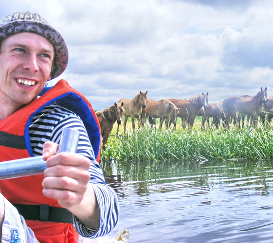
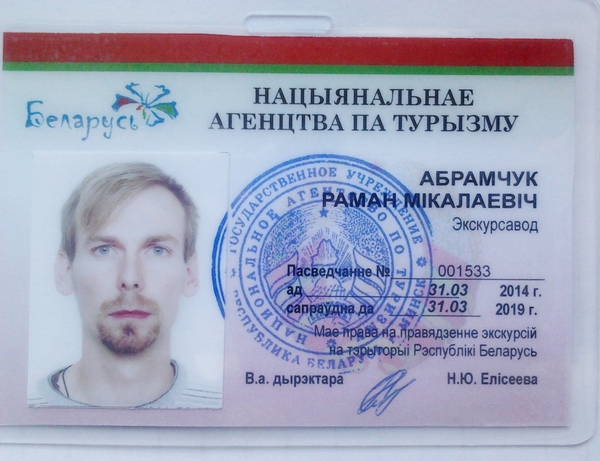
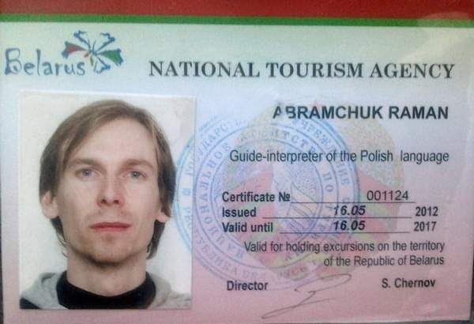
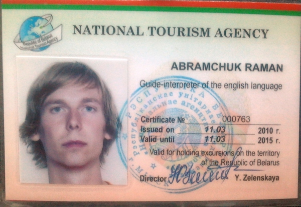
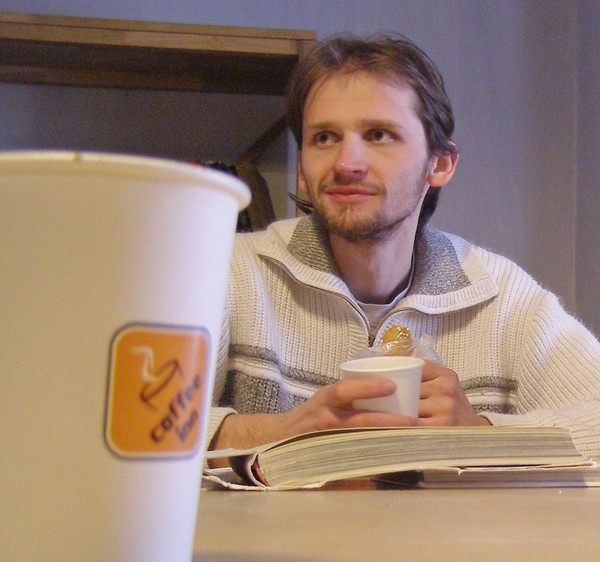
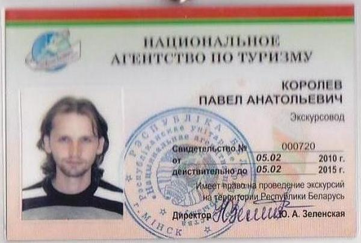
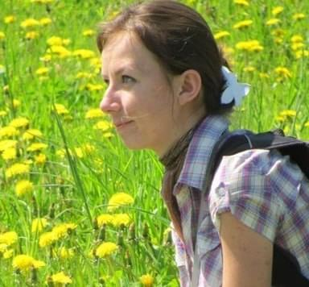
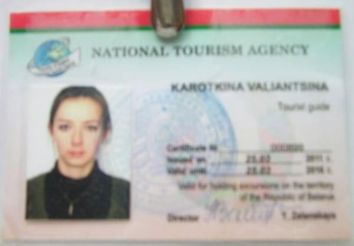

Hello! Let's get acquainted: we are the "Mienski vielašpacyr" ("Miensk bike tour") team, the
tour-guides, Minsk and cycling amateurs.
The main thing about us is that we cannot live at home, we like to go far away, then looking for
a way back, with adventures, if possible.
We like Minsk. Not only its beautiful avenues, parks and historical core,
but its backyards, old wooden private houses, soviet blocks of flats, industrial and garage
zones as well.
For us, it is a great pleasure to tell guests and locals about Minsk, especially when cycling.
The bike is a very suitable kind of the transport for such aim:
small, but important details wouldn't get out of traveller's sight,
the details sometimes could mean much more than grandiose monuments at the central squares.
"Mienski vielašpacyr" started in spring 2014, and for this moment our cycling-band consist
of:

Raman Abramchuk, tour guide, culturologist, "Mienski vielašpacyr"'s founder.
"I like to walk around Vierchni horad and Hrušaŭka, like to listen the player walking around the
park, drink "kvas" at the Cnianka artificial lake's embankment."
personal contacts: +375297040018, romannn@tut.by,
Facebook,
Vkontakte.
Private businessman's registrational number: 192 201 977
(registered on January 28th, 2014 by Minsk City Executive Committee), bank account number is
here.
Tour-guide's certificate № 000556, 30 March 2009; № 001533, 31 March 2014; English language
guide-interpreter's certificate № 000763, 11 March 2010; Polish language guide-interpreter's
certificate № 001124 16 May 2012.




Paviel Karalioŭ, tour-guide, historian.
"I like to present to tourists unknown points of Minsk, like to read historical books. I'm
interested in the problem of monuments' preservation."
Tour-guide's certificate № 000720, 05.02.2010


Valiancina Karotkina, tour-guide, history teacher.
"I like to visit places where I have never been before, I like trains, roads, stars and a full
moon, a heavy bag on my back and campfires..."
Tour-guide's certificate № 000899 25.03.2011

__
Additional services: walking and car tours around Minsk and Belarus. Don't stop! Discover a new
country!
{kind=link}
{kind=link}
{kind=link}
{kind=link}
{kind=link}
{kind=link}
{kind=link}
{kind=link}